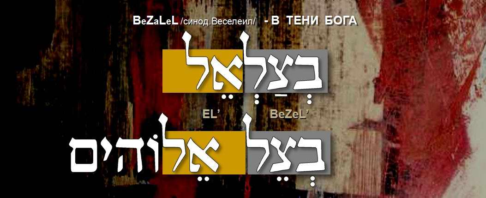
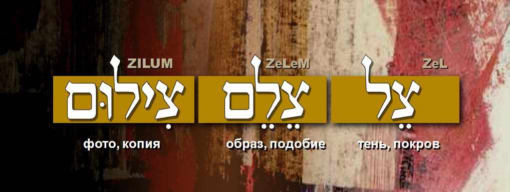
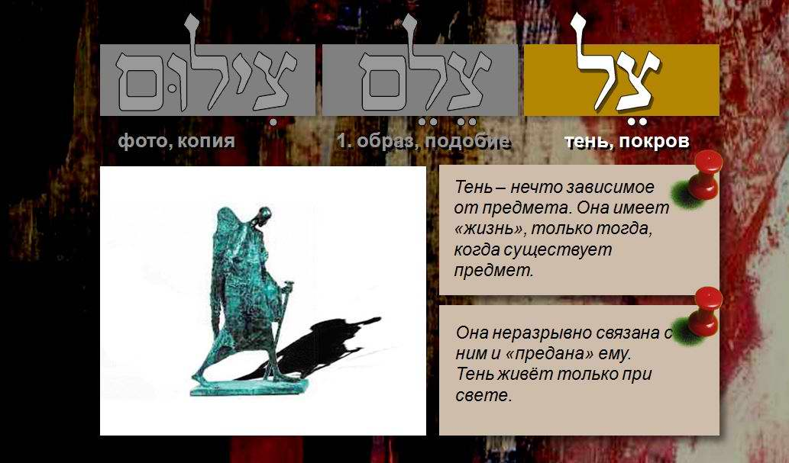
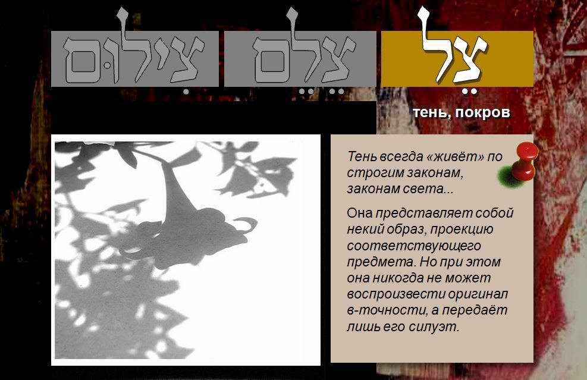
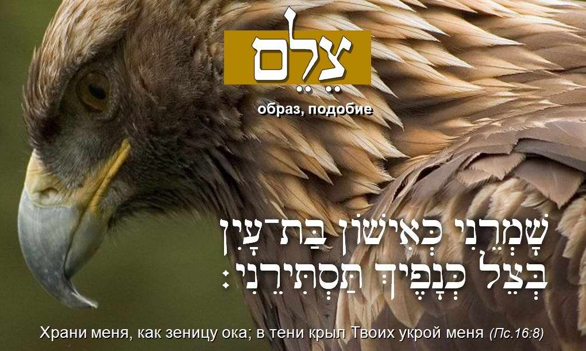
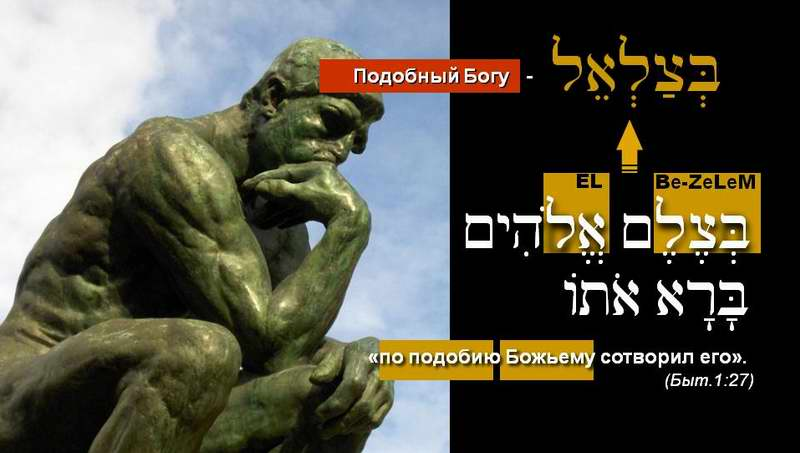
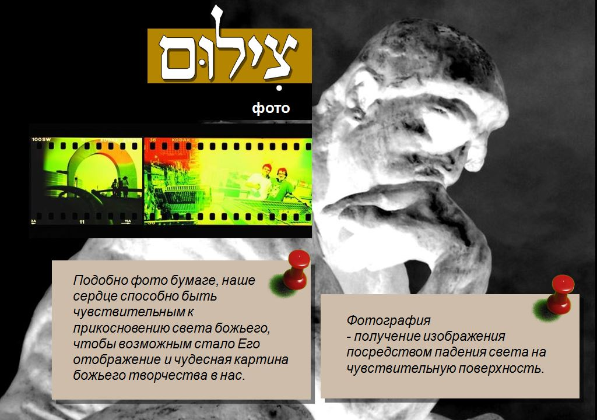

Bezalel. Under the Shelter of the Most High
"See, I have called by name Bezalel the son of Uri, the son of Hur, of the tribe of Yehudah…"
רְאֵה קָרָאתִי בְשֵׁם בְּצַלְאֵל בֶּן־אוּרִי בֶן־חוּר לְמַטֵּה יְהוּדָה׃
Exod. 31:2 RE'E KARATI BE-SHEM BETSALEL, BEN URI, BEN HUR, MI-MATE YEHUDA
Bezalel (in the Russian Synodal Bible: Veseleil) is the master craftsman whom God called three and a half thousand years ago to build the Tabernacle of the Covenant (the portable sanctuary). God made a skilfully crafted Tabernacle the condition for Israel, so that He could dwell in the midst of His people.
BEZALEL, SON OF LIGHT. The Calling (part I)
BEZALEL. Under the Shelter of the Most High (part II)
BEZALEL, SON OF LIGHT. The Light of the LORD (part III)
BEZALEL, SON OF LIGHT. Grandfather HUR (part IV)
BEZALEL, SON OF LIGHT. One Who Glorifies God (part V)
Film: Ephraim Kalish. Music: Daniel Kruglov. Torah-Art studio.
The Torah specially stresses that the Most High called a particular person from among Israel, naming him by name (Exod. 31:2). This verse can be understood in two ways:
1. Out of the multitude of Israelites in the wilderness God chooses the one whose name is Bezalel son of Uri, and entrusts him with work of the highest level: the making of a sanctuary for the Creator of heaven and earth.
2. Another reading of the same text says: God gave the man his name from the beginning, that is, He Himself called him by this name, Bezalel (in the shadow of God), before he was born. As King David later said, God writes in His book all the days of a man when as yet there was none of them. This is the way in which, from the beginning, God created everything we see. By calling by name what does not yet exist, He gives it the beginning of its existence: "For He spoke, and it was done" (Ps. 33:9).
In ancient times, to give someone a name meant to show one's authority over him. But there is something special when God Himself names a person. Such a name is a calling and a law of life that defines the person's whole life. God equips such a person with everything necessary (abilities, talent) to carry out His great design. Of course, it depends on the person whether to accept or reject the calling determined by the Creator.
בצלאל BEZALEL. In the shadow of God
Bezalel, בצלאל, translated from Hebrew, means "in the shadow of God": צל is shadow.

Here are a few words of this root that will help us to picture the meaning of the artist's name more clearly and fully:
צֵל [TSEL]: shadow; צלם [TSELEM]: image; צילום [TSILUM]: copy.

So, the shadow. The properties of a shadow tell us a great deal about the character and nature of the artist. A shadow lives only in light; in darkness there can be no shadow. A shadow always exists according to strict laws, the laws of light. It is a kind of image, a projection of an object, yet it can never reproduce the original exactly. A shadow conveys only its outline, a certain idea of the object.

And another of its properties: a shadow has life only as long as the object exists. It depends on it entirely and is "devoted" to it. As a shadow follows its master, so a person follows his Maker.

But the Hebrew word צֵל [TSEL] means not only shadow as the projection of an object, and not only shelter from the scorching sun and the coolness so longed for in Israel, but also protection. That is how the psalmist says it: "Keep me as the apple of the eye; hide me under the shadow of Thy wings" (Ps. 17:8).

The second word of the root, צלם [TSELEM], translated from Hebrew, means image, likeness. Man was created, as it is written: בְּצֶלֶם אֱלֹהִים בָּרָא אֹתוֹ, "…in the image of God created He him…" (Gen. 1:27).

The words highlighted in this phrase (in Hebrew) can also be found in the name Bezalel, and they come in exactly the same order. This device is typical of Hebrew. There are many names made of several words or parts of words. For example: Avraham, father of a multitude of nations; Malki-Tsedek, king of righteousness; Yisrael, may God rule. This gives us one more way to read the name Bezalel, as a phrase: Be-tselem + El, that is, like God. So we are speaking of man's likeness to God. What could be more important for a creative person than to realise this fact? I am created in His image and likeness.
One of the most important sides of this likeness is man's ability and need to create: a likeness called to reflect the glory of God. God calls the creative person like Himself. More than that, He fills such a person with His inspiration.

One more word of the same root, צילום [TSILUM], is a modern word meaning "photograph, print". The dictionary defines photography as obtaining an image by light falling on a sensitive surface. This property of photography is a vivid allegory for us. Like photographic paper, the human heart can be sensitive to the touch of God's light, and this allows the Creator to create through you.
So these three words with a common root, צֵל [TSEL] (shadow), צלם [TSELEM] (image) and צילום [TSILUM] (copy), let us enter into the message to the person of art that God reveals in the name of Bezalel, the first Israelite artist.
Here, then, is what the name Bezalel contains that matters for us:
— Creative work must be defined by the law of the Eternal One, and it is important for the artist to remain faithful to his Maker and to follow Him.
— The Most High has given man a great gift: filled with divine inspiration, to be like the Creator in his creative work and to show His great power and glory.
— This name holds the calling of the creative person: to capture and to reflect the greatness of the Creator of the universe.
BEZALEL, SON OF LIGHT. The Calling (part I)
BEZALEL, SON OF LIGHT. Under the Shelter of the Most High (part II)
BEZALEL, SON OF LIGHT. The Light of the LORD (part III)
BEZALEL, SON OF LIGHT. Grandfather HUR (part IV)
BEZALEL, SON OF LIGHT. One Who Glorifies God (part V)
This version of the article has been revised and expanded by the author. (Ephraim Kalish's article was first published on the site skiniyadavidova.org.)
Author: Ephraim Kalish / Torah-Art